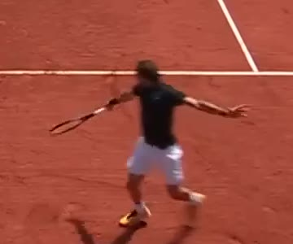

A player moves on a court and swings at the ball.
"Let me control this player to move and swing. Every successful return scores 1 point."
if arrow keys → move if Space → swing goal: +1 per return
Rough on purpose: enough to ask Action what the player must be able to do.
if player.swinging and swing.in_hit_window and dist(ball, racket) < reach: hit(ball) if return_ok(ball) and not ball.scored: score += 1 ball.scored = True if ball.out or ball.bounced_twice: serve_again()
| action | spec | source |
|---|---|---|
| idle | loop · 1 pose | video |
| move ← → | 4 px/tick · 2 poses | video |
| move ↑ ↓ | same speed | added |
| swing | 6 · 4 · 8 ticks · locks move | video |

referencefrom video
One consistent look, a few key poses per action. No full multi-view animation in v1.

- background plate
- court bounds · net · baselines
- play area + colliders
net: y=150, collider
baseline: y=356
play_area: estimated
- input control + action state machine
- load scene and character assets
- bind each action to its poses
- collision, hitting, ball motion
- score, end, restart
- runnable, testable build
Modules define content and behavior. Game Code is the implementation layer: evaluated and fixed on its own.
on key(Space): if state != swing: start(swing) update(): move(player, keys * 4) if hit_window: try_hit(ball) render(): draw(scene.bg) draw(pose[state][frame])
←→↑↓ move · Space swing · click to play
A check points to a place to look. It does not prove the root cause.
intent satisfied · rule asserts · hit condition · scoring & restart
e.g. one successful return scored twice
fix → conditions and rule functions
required actions covered · direction / speed · swing timing · matches reference
e.g. swing too short in the spec; move speed unrealistic
fix → action definitions, params, transitions
same identity and look · pose coverage · consistent across poses
e.g. swing frame does not look like the player; hit pose missing
fix → action images / poses
background and layout kept · court bounds · collision aligned with image
e.g. boundary config off the visible white line
fix → layout, bounds, collision config
builds and runs · spec ↔ implementation · input / event / asset binding · stable
e.g. assets are right, but Space plays the wrong animation
fix → implementation and integration code
- screenshots / recordings
- input traces
- state + event logs
- automatic tests
- visual review when needed
- Run & play
- Evaluate per target
- Reproduce & diagnose
- Pick fix target
- Local fix
- Re-run + regression
- expected / actual
- Space → swing pose / Space → move pose
- repro
- seed 3 · keys → ×20, Space @ tick 41
- evidence
- frame 41 screenshot · log
anim=move - target
- Game Code action binding
- allowed scope
game/input.ts,game/anim.ts
- the swing image itself is wrong→Character
- swing timing defined wrong→Action
- image and spec right, played wrong→Game Code
- hit condition itself unreasonable→Mechanics